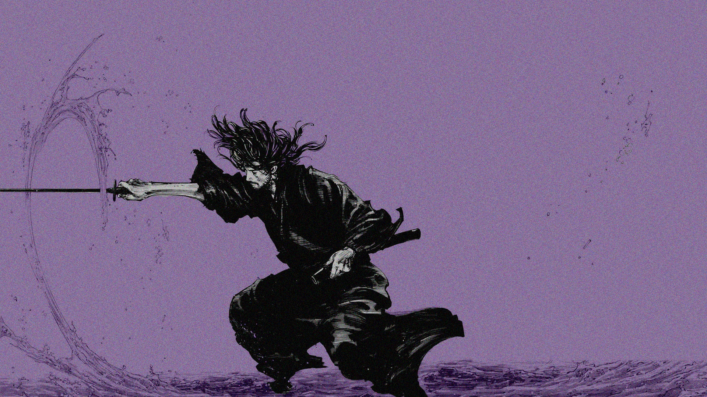

Miyamoto Musashi: The Undefeated Swordsman and his Innovative Style
Miyamoto Musashi (1584-1645) was a legendary figure in Japanese history, not just for his undefeated record in over 60 duels, but also for his unique fighting style and philosophical approach to martial arts. Let's delve into the world of this iconic swordsman:
From Rōnin to Sword Saint:
Musashi's life began amidst the turmoil of the Sengoku period. Orphaned at a young age, he became a rōnin, a masterless samurai, and honed his skills through numerous duels. Through extensive experience and observation, he developed his own approach to swordsmanship, defying traditional styles.
The Niten Ichi-ryu: A Revolutionary Approach:
Musashi's groundbreaking innovation was the Niten Ichi-ryu (Two Heavens as One) style. This unconventional method involved wielding two swords simultaneously: a long katana in one hand and a shorter wakizashi in the other. This offered several advantages:
Unpredictability: The dual blades surprised opponents accustomed to single-sword techniques.
Flexibility: The wakizashi allowed for swift defense and close-quarter combat.
Power: The katana provided extended reach and powerful strikes.
Beyond the Blade: A Life of Learning:
Musashi was not just a skilled fighter but also a profound thinker. He believed in constant self-improvement and incorporated elements of Zen philosophy into his training. He authored the renowned The Book of Five Rings, a treatise on strategy and philosophy applicable not only to combat but also to life itself.
Musashi's Legacy:

Today, Musashi remains a symbol of dedication, innovation, and self-mastery. Though the exact details of his style remain shrouded in some mystery, his influence on Japanese swordsmanship and martial arts in general is undeniable. The legend of Miyamoto Musashi continues to inspire, reminding us that true mastery lies not just in physical prowess but also in intellectual and spiritual exploration.